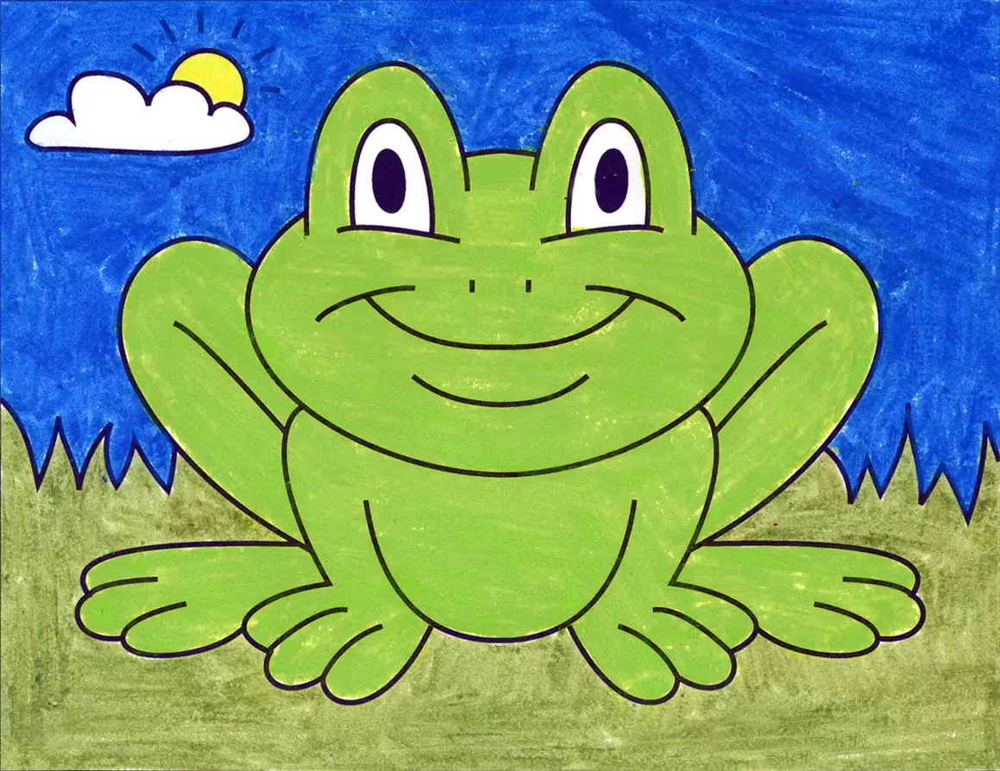
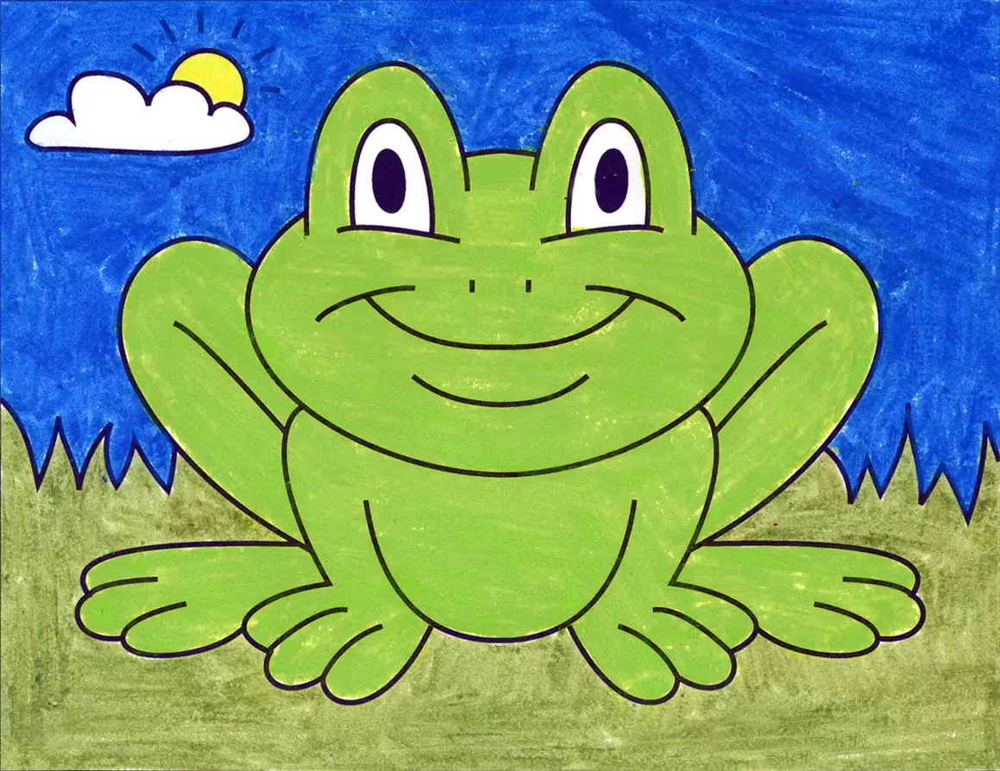
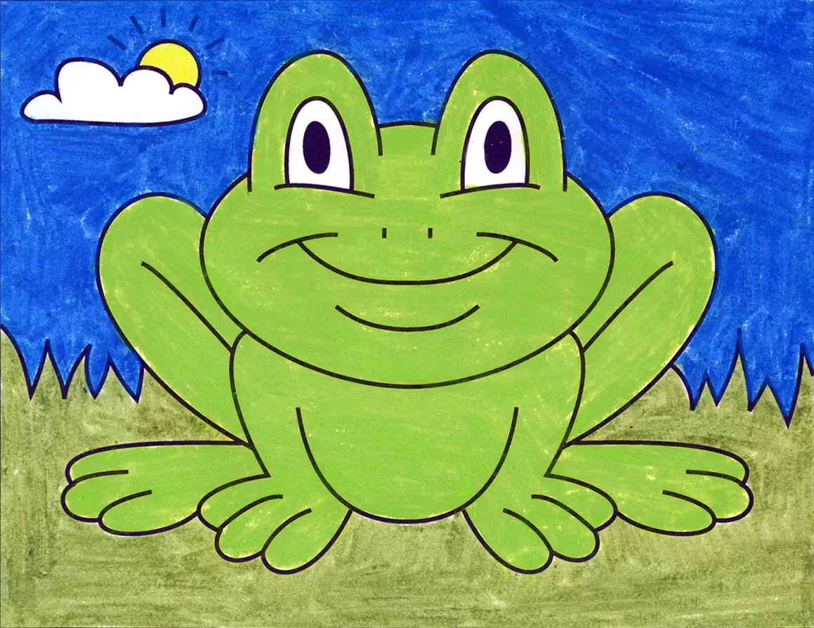
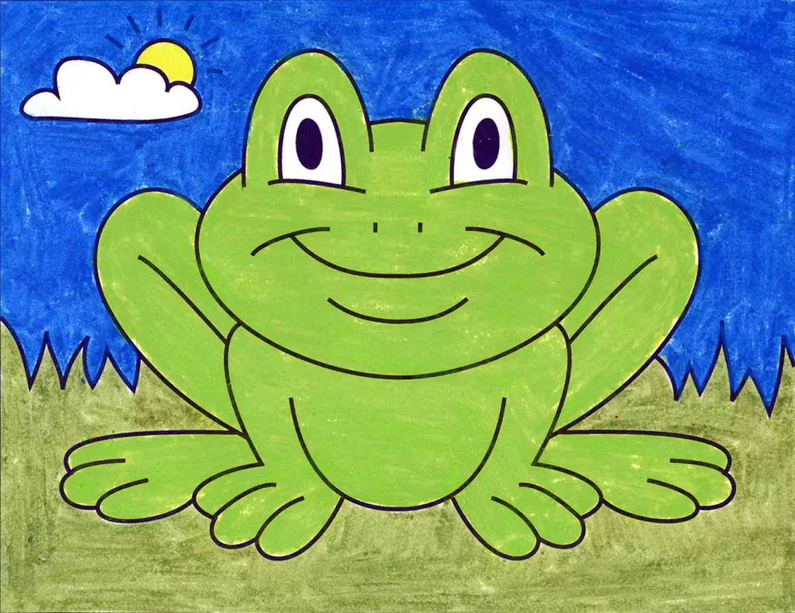

KÜLKEDİSİBir varmış bir yokmuş, evvel zaman içinde bir ülkede yaşayan zengin bir tüccar, tatlı ve iyi kalpli kızı ile birlikte yaşıyordu. karısının ölümünden sonra evde kızının yalnız kalmasına üzülen babası, iki kızı olan kibirli bir kadınla evlendi. Düğünden bir süre sonra tüccar da ölünce, üvey anne üvey kızını evin hizmetçisi yaptı. Evin tüm işlerini yapmaktan çok yorulan kızcağız geceleri şöminenin yanı başında küllerin arasında uyuyordu. Bu yüzden ona Külkedisi adını takmışlardı. Yıllar sonra Kral oğlunun evleneceği kızı seçmesi için bir balo düzenledi. Ülkede yaşayan tüm kızları da bu baloya davet etti. Kendilerini beğenmiş üvey kız kardeşler bu haber ile mutluluktan havalara uçtular. Nasıl giyinip, hangi mücevherleri takacaklarını düşünmeye başlamışlardı bile. Külkedisi üvey kardeşlerinin hazırlıklarını büyük bir üzüntü ile izliyordu. Çünkü üvey annesi ona evde kalıp temizlik yapmasını ve akşam yemeğini hazırlamasını söylemişti. Beklenen gün geldiğinde şık bir araba onları alıp, saraya doğru yola çıktı. Külkedisi arkalarından hüzünlü gözlerle bakıp kaldı.